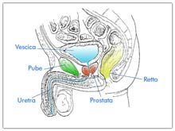
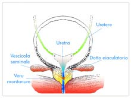

Gruppo Romano Multidisciplinare per lo studio del Dolore Pelvico Cronico
Vedi la prostatite esplodere!!
Queste clips dimostrano perchè le infiltrazioni prostatiche, in alcuni tipi di prostatite, siano efficaci. Quando i batteri si ripresentano dopo ogni ciclo di antibiotici significa che sono indovati in recessi prostatici non raggiungibili con terapia sistemica. In questi casi l’unica possibilità per sconfiggerli è portare gli antibiotici direttamente dentro questi nidi infetti fibrocalcifici,
L’esplosione dei nidi di prostatite documenta e dimostra come il farmaco sia arrivato direttamente nel bersaglio!
Leggi Le Testimonianze
Vi è stata diagnosticata una prostatite acuta o cronica che è una malattia che colpisce dal 30 al 50% degli uomini sessualmente attivi. Si presenta con svariati sintomi, fra i quali dolore pelvico, eiaculazione precoce, infertilità, impotenza e talvolta incontinenza.
In questo sito troverete un’esauriente descrizione dell’anatomia della prostata e delle più avanzate tecniche diagnostiche e terapeutiche per la prostatite.
Troverete inoltre ad una selezione di video di interventi chirurgici per la terapia della ipertrofia prostatica (TURP) e della sclerosi del collo della vescica sia con la consueta tecnica chirurgica (TUIP) che con il nuovissimo device non chirurgico (I-Tind)
Per le pazienti presentiamo la nostro pluriennale esperienza nella diagnosi e la terapia delle cistiti femminili, malattia debilitante come e più della prostatite.
Infine nella sezione storia, sarà possibile apprendere tante notizie interessanti curiose e a volte terrificanti sulle antiche terapie per la prostata e sulla storia di alcuni prostatitici famosi.

Prostatite acuta e cronica
Introduzione
La prostatite è stata chiamata il cestino dei rifiuti (wastebasket) dell’ignoranza clinica (Stamey 1980), anche se è una malattia molto frequente; infatti seppur non con l’incidenza ipotizzata nel passato(dal 35 al 50% degli uomini secondo Drach e Barbalias), colpisce,secondo le statistiche Europee, il 5-10% degli uomini in età fertile o l’ 8-9% secondo il National Ambulatory Medical Care Survey (USA). Ma l’importanza di questa patologia così invalidante per coloro che la subiscono, comincia solo ora ad essere oggetto di ricerche scientifiche approfondite, in quanto sia le Società Farmaceutiche che gli Urologi sono stati più interessati a studiare le patologie prostatiche cosiddette maggiori, cioè l’ipertrofia benigna (IPB) ed il cancro.
Tutto quello che noi esporremo in questo sito è scientificamente conforme a tutte le conoscenze più moderne sulla prostatite o meglio su quella oggi chiamata in maniera più precisa sindrome cronica dolorosa del pavimento pelvico o CPPS (Chronic Pelvic Pain Syndrome).
Riteniamo, forse immodestamente, di far parte
della pattuglia di urologi che a livello mondiale più si interessa
attualmente a questa malattia.
E’ infatti così frustrante essere ammalati di qualche cosa di così reale, con
sintomi così presenti e così clinicamente ben spiegabili ed essere invece
trattati come “malati immaginari” o nella migliore delle ipotesi come malati il
cui consiglio terapeutico più comune è quello “di non pensarci, tanto non c’è
niente da fare”.
Le cause che sono alla base di questa terribile sindrome (l’aggettivo terribile potrebbe sembrare esagerato ma in alcuni pazienti è invece una spaventosa realtà quotidiana) sono, nel passato, state ricercate esclusivamente con una visione prostatocentrica cioè con riferimento esclusivo alla ghiandola prostatica e a sue infezioni più o meno evidenti. Con il passare degli anni invece, pur continuando a ritenere un’iniziale infezione prostatica, come probabile causa iniziale del problema, ci si sta sempre più convincendo che il ripetuto rilevamento di eventuali batteri (di solito enterobatteri) nello sperma o nelle urine, sia più ormai una conseguenza che la causa della sindrome cronica dolorosa del pavimento pelvico (cosiddetta CPPS). E sempre di più ci si rende conto che i sintomi manifestati dai pazienti non partono direttamente da un focus prostatico, ma quasi sempre sono attribuibili a patologie spastiche della muscolatura del pavimento perineale con coinvolgimento infiammatorio reattivo dei nervi pudendi.
Ora, tutto ciò premesso, andiamo a conoscere più da vicino questa misteriosa prostata e le strutture anatomiche del pavimento perineale coinvolte nella sindrome dolorosa cronica.
Cos’è’ la prostata?
La prostata è una ghiandola che fa parte del sistema riproduttivo maschile ed è collegata strettamente con l’apparato urinario maschile. La prostata produce e immagazzina un fluido chiamato secreto prostatico. Questo fluido si mescola nell’uretra, al momento dell’eiaculazione, con lo sperma stoccato nelle vescicole seminali, proveniente dai testicoli.
La prostata di un giovane è delle dimensioni di una noce e cresce lentamente con l’età. Questa ghiandola si trova appena sotto la vescica, davanti al retto e circonda l’uretra (il canale che trasporta l’urina e lo sperma fuori dal corpo). Durante l’eiaculazione lo sperma viaggia attraverso l’uretra e fuoriesce dal pene.
La prostata, di solito sana negli uomini più giovani, si ipertrofizza spesso oltre i 50 anni diventando una fonte di problemi. Ciò nonostante si possono verificare i problemi della prostata anche tra i giovani nei quali si può sviluppare la temuta prostatite>.
Pertanto le malattie della prostata si possono suddividere in:
-
Infiammazioni batteriche o abatteriche (Prostatiti);
-
Iperplasia prostatica benigna, o IPB che consiste in un ingrossamento della ghiandola, con i conseguenti noti sintomi ostruttivi (minzione frequente e ostacolata, minzione notturna, gocciolamento post minzionale);
-
Cancro della prostata.
Questo sito si occupa fondamentalmente della diagnosi e terapia della prostatite e della malattia dolorosa cronica del pavimento perineale ed è stato, primo in Italia, editato nell’anno 2000.
Da segnalare che questo
è l’unico sito
italiano recensito dalla Fondazione Mondiale della Prostatite
Cronica.
www.prostatitis.org
Quando si sviluppa la prostatite acuta o cronica?

La prostatite si sviluppa principalmente negli uomini sotto i 50 anni di età. La prostatite è un’infiammazione della ghiandola prostatica, spesso associata a tumefazione e dolore della stessa. Talvolta si associa anche con difficoltà minzionale. Da notare che i sintomi causati dalla prostatite si possono trasmettere anche all’ano, al pavimento perineale, al pene, ai testicoli, all’inguine e all’interno cosce.
LA CLASSIFICAZIONE DELLE PROSTATITI E’ LA SEGUENTE:
-
Prostatite batterica acuta
-
Prostatite batterica cronica
-
Prostatite abatterica cronica/sindrome dolorosa del pavimento pelvico
-
Prostatite asintomatica
PROSTATITE BATTERICA ACUTA
La prostatite acuta batterica è il meno comune dei quattro tipi di prostatite ed è anche considerata come la più facile da diagnosticare e curare in modo efficace. Questa forma di prostatite è provocata da un’infezione della prostata di tipo batterico. La prostatite batterica è spesso acuta (improvvisa e grave) e di solito causata da un’infezione a trasmissione sessuale. I pazienti con questa malattia presentano i tipici segni dell’infezione genito-urinaria, con:
-
brividi,
-
febbre,
-
dolore nella parte bassa della schiena e nella zona genitale,
-
frequenza – urgenza minzionale (spesso di notte),
-
dolore o bruciore durante la minzione,
-
dolori muscolari,
-
un’infezione dimostrabile delle vie urinarie, come evidenziato dai globuli bianchi e batteri nelle urine.
La terapia di questa malattia è sempre basata sulla somministrazione di antibiotici mirati seguendo le informazioni ottenute dalle urino e spermiocolture e dai correlati antibiogrammi.
Leggi la terapia della prostatite acuta
PROSTATITE BATTERICA CRONICA
La prostatite cronica batterica si presenta quando i batteri creano nella prostata i cosiddetti “biofilms batterici” all’interno dei quali gli antibiotici somministrati per via sistemica non riescono a penetrare. In questi casi il paziente presenta tipicamente infezioni del tratto urinario, che sembrano inizialmente guarire sotto terapia antibiotica per poi ritornare alla sospensione degli stessi. Se in questi casi il trattamento di antibiotici per un periodo di tempo prolungato fallisce, allora questo è il momento di eseguire infiltrazioni intraprostatiche di antibiotici.
Leggi la terapia della prostatite cronica
PROSTATITE ABATTERICA CRONICA
La prostatite cronica abatterica è la forma più comune, ma più difficile da curare, di prostatite. Può comparire ad ogni età, ma di solito dopo i 25 anni. La comparsa dei sintomi non appare legata a nulla di specificamente rilevabile e questi possono nel tempo attenuarsi sino a scomparire per poi ripresentarsi senza preavviso. La caratteristica specifica è che nelle urine, nello sperma e nel tampone uretrale, non si isolano batteri patogeni. Talvolta si rilevano cellule infiammatorie ma talvolta no.
INFIAMMAZIONE DEI NERVI PUDENDI (Sindrome dolorosa cronica del pavimento perineale)
La situazione di prostatite cronica abatterica, non è distinguibile (o forse è la stessa cosa?) dalla infiammazione dei nervi pudendi. Negli USA l’acronimo CPPS (Chronic Pelvic Pain Syndrome), indica quella vastissima gamma di sintomi dolorosi spesso associati o meno a problematiche minzionali e/o sessuali. I clinici che si occupano di “prostatite”, fanno rientrare ormai in questa sindrome il 70-80% dei pazienti cosiddetti prostatitici. La malattia, che può insorgere per le più svariate cause, è spesso la sequela di una vera pregressa prostatite. Ma può essere conseguente anche a malattie proctologiche (fistole, ragadi, emorroidi), come può esserne essa stessa la causa.
Può seguire un lungo periodo di stress o di affaticamento psico-fisico. Si basa sul permanere di uno spasmo prolungato della muscolatura del pavimento perineale (muscoli elevatori dell’ano), con drammatica infiammazione, di solito conseguente, dei nervi pudendi. Ovviamente in questa situazione non sarà possibile rilevare la presenza di batteri patogeni, o se rilevabili, saranno sempre e solo enterobatteri (E.Coli, Proteus, Klebsiella, Enterococco, ecc.), di provenienza dall’ampolla rettale dello stesso soggetto affetto dalla sindrome. In questo caso, questi batteri, per le alte pressioni evidenziabili a livello dell’ampolla rettale (conseguenti allo spasmo della muscolatura perineale), passeranno per via linfatica o transparietale, nella prostata del paziente. L’errata interpretazione di questa presenza, condurrà il medico a prescrivere ripetuti cicli di antibiotici, che potranno sterilizzare la prostata solo per breve periodo, ma non risolveranno la sintomatologia legata alla malattia.
PROSTATITE ASINTOMATICA
La prostatite asintomatica non viene diagnosticata subito poiché il paziente non si lamenta di dolore o di fastidio, ma presenta però segni di infiammazione o infezione nello sperma o nel secreto prostatico. Questa forma di prostatite di solito viene diagnosticata durante la ricerca delle cause dell’infertilità o in seguito alla presenza di un PSA elevato
Leggi la dieta della prostatite
Esegui il questionario sintomatologico e poi spediscimelo
RICORDA CHE…
- Comparsa di bruciori al pene dopo un rapporto sessuale, possono indicare un’infezione
- Comparsa di macchie sul glande o taglietti sulla pelle del prepuzio possono indicare un’infezione
- Presenza di cattivo odore del glande, nonostante accurata pulizia, può indicare un’infezione;
- Comparsa di una goccia sulla punta del pene, trasparente o torbida, può indicare un’infezione
- Comparsa improvvisa di eiaculazione precoce o deficit erettili, possono indicare un’infezione.
Prof. Dott. Federico
Guercini
Specialista in Urologia
Membro della Società Americana di
Urologia (AUA)
Membro della Società Europea di Urologia (EAU)
Membro della Società Italiana di Urologia (SIU)
Disclaimer: I RISULTATI DELLE TERAPIE ESPOSTE NEL SITO NON SONO GARANTITI E GLI ESITI POSSONO VARIARE DA PERSONA A PERSONA